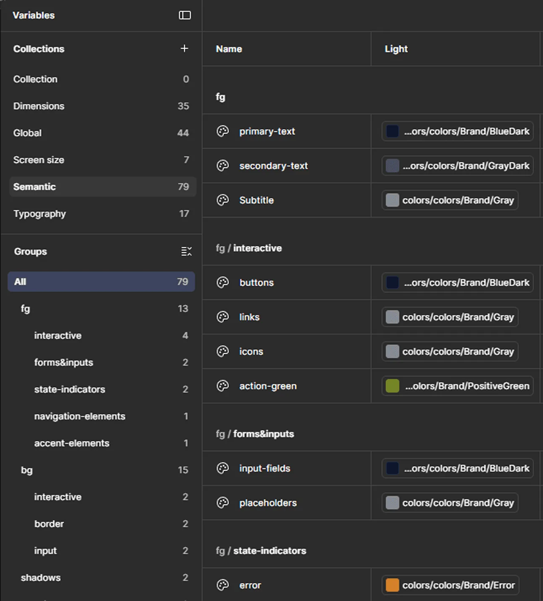
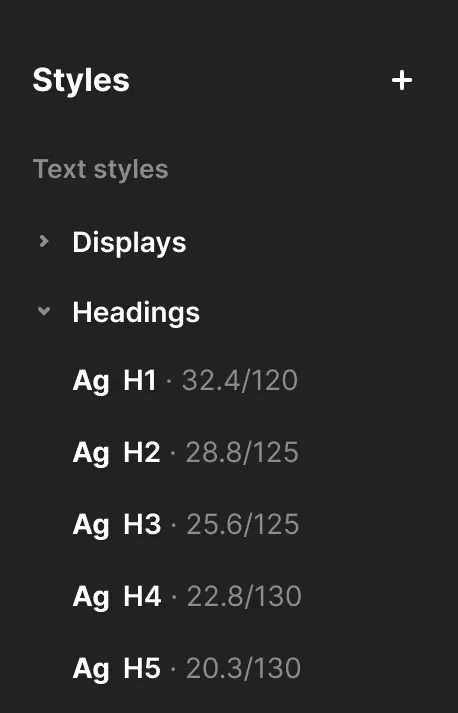
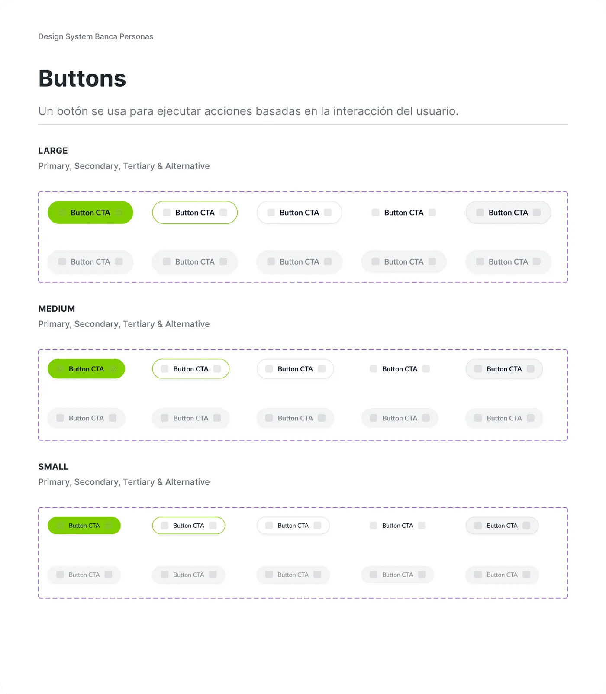
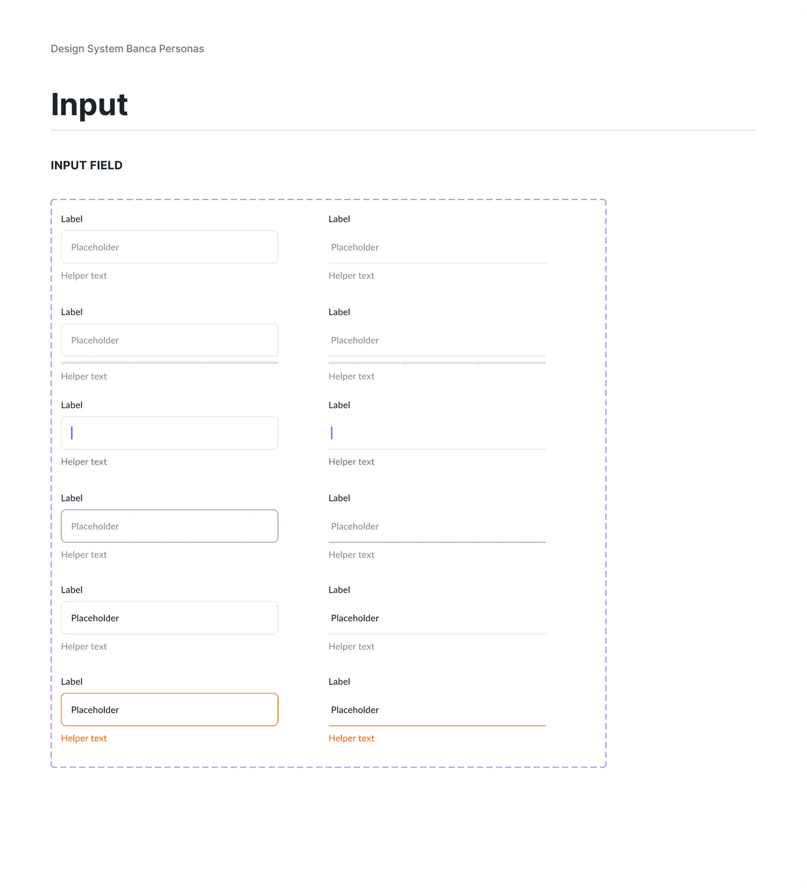

Case study · 02 · Design system
Design System
The first design system for Tu Financiera, adopted across design and development.
One shared language of tokens, styles, and components, built from scratch during the redesign of an app serving 80,000+ active users (25,000 before launch).
From screens built by hand to one source both teams trust
Tu Financiera’s first design system became the default way to build the app, not an optional library. Designers pull from it hundreds of times a week, and developers build from the same names and values.
Components
Component inserts every week
Design variables
A full redesign, with no shared foundation
The system started alongside the Tu Financiera app redesign: 14 new flows designed by a team of three for an app used by tens of thousands of people. Without a shared foundation, every new flow would add its own version of the same buttons, inputs and cards.
Read the Tu Financiera app case study →No UI kit, and my idea to build one
There was no UI kit or style guide before. The interface had many variations and had lost its consistency. The system was my idea: I researched it, proposed it, built it, and keep scaling it.
Every screen was assembled by hand
The same button, input, or card drifted in color, spacing, and size from one flow to the next. Developers had to guess, or ask for values that lived only in a designer’s file.
Inconsistent for users, slow for the team
- 01The same element built five different ways
- 02No shared vocabulary between design and code
- 03Handoffs stalled on values no one could point to
The hard part wasn’t drawing the components. It was getting two teams to trust one source and build from it.
Three layers, so one change updates everything above it
Each layer builds on the one below. Change a value at the base and every style and component that uses it updates predictably, in design and in code.
Name the intent, not the value
Variables hold the raw decisions: color, typography, spacing, and radius. Brand values like BlueDark or PositiveGreen live in a global collection, and semantic tokens such as primary-text, buttons, or action-green point to them. A screen asks for “primary text”, never for a hex code.
Naming by role (background-primary, not “light gray”) also prepares the next step. The system runs in light mode today, and dark mode will only need new values for the same names.

Repeated decisions become one click
Published styles sit on top of the variables, turning definitions the team used again and again into reusable choices.

The app’s real patterns, with every state
Components assemble styles and tokens into the patterns the app actually uses. Each one ships with its full set of sizes and states, so behavior is the same everywhere it appears.
What became a component was simple: the elements we used most and rebuilt most often. Fixing a component fixes it everywhere it’s used.


A system only counts if people use it
Every component is documented and synced with developers, so the file and the code describe the same thing. Changes travel with the work, in the same Scrum sprints as the features that need them.
- 01Adopted by 2 teams, design and development
- 02500+ component inserts every week
- 03Components documented and synced with 4 developers in Scrum sprints
Anyone can ask, one person approves
I introduced the system through annotations in Figma and walkthrough calls. Change requests come from designers, developers, stakeholders and the PM. Designers add them to the system, and I approve them before they’re published.
The default way to build
The system now underpins the redesigned Tu Financiera app, which launched with an NPS of +73.5 and has grown to more than 80,000 active users.
Design variables
Published styles
Components
Component inserts every week
- 01Designers prototype faster
- 02Fewer visual bugs reach the app
- 03Handoff to developers is faster
- 04Products look and behave consistently
A system is a habit, not a file
Make the system the easy path. Consistency only scales when using the system is easier than rebuilding by hand.
Sync is a routine. Keeping design and code aligned needs a regular rhythm, not a one-time handoff.
Measure before you build. I didn’t record how many variations the old UI had, so I can describe the improvement but not prove it with numbers. On my next system, I’ll audit first, then track handoff time and visual bugs after.
Dark mode. Because tokens are named by role, it means new values for the same names, not a second system.


Let’s build something worth shipping
Briefs, collaborations, or a quick question. I read everything and usually reply within a couple of working days.